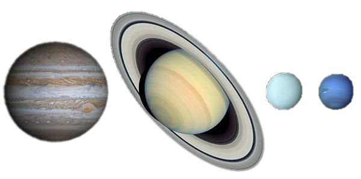

Neptuno es el octavo planeta en distancia respecto al Sol y el más lejano del sistema solar. Forma parte de los denominados planetas exteriores, y dentro de estos, es uno de los gigantes helados, y es el primero que fue descubierto gracias a predicciones matemáticas. Su nombre fue puesto en honor al dios romano del mar —Neptuno—, y es el cuarto planeta en diámetro y el tercero más grande en masa. Su masa es diecisiete veces la de la Tierra y ligeramente mayor que la de su planeta «gemelo» Urano, que tiene quince masas terrestres y no es tan denso. En promedio, Neptuno orbita el Sol a una distancia de 30,1 ua. Su símbolo astronómico es ♆, una versión estilizada del tridente del dios Neptuno.Tras el descubrimiento de Urano, se observó que las órbitas de Urano, Saturno y Júpiter no se comportaban tal como predecían las leyes de Kepler y de Newton. Adams y Le Verrier, de forma independiente, calcularon la posición de un hipotético planeta, Neptuno, que finalmente fue encontrado por Galle, el 23 de septiembre de 1846, a menos de un grado de la posición calculada por Le Verrier. Más tarde se advirtió que Galileo ya había observado Neptuno en 1612, pero lo había confundido con una estrella.
Neptuno es un planeta dinámico, con manchas que recuerdan las tempestades de Júpiter. La más grande, la Gran Mancha Oscura, tenía un tamaño similar al de la Tierra, pero en 1994 desapareció y se ha formado otra. Los vientos más fuertes de cualquier planeta del sistema solar se encuentran en Neptuno.Neptuno tiene una composición bastante similar a la del planeta Urano, y ambos tienen composiciones que difieren mucho de los demás gigantes gaseosos, Júpiter y Saturno. La atmósfera de Neptuno, como las de Júpiter y de Saturno, se compone principalmente de hidrógeno y helio, junto con vestigios de hidrocarburos y posiblemente nitrógeno. Contiene una mayor proporción de hielos, tales como agua (H2O), amoníaco (NH3) y metano (CH4). Los científicos muchas veces categorizan Urano y Neptuno como gigantes helados para enfatizar la distinción entre estos y los gigantes de gas Júpiter y Saturno. El interior de Neptuno, como el de Urano, está compuesto principalmente de hielos y roca. Los rastros de metano en las regiones periféricas exteriores contribuyen para el aspecto azul vívido de este planeta.
| Característica | Neptuno |
|---|---|
| Distancia orbital (km) | 4.498.396.441 |
| Radio ecuatorial (km) | 24.622 |
| Volumen (km3) | 62.525.703.987.412 |
| Masa (kg) | 102.412 x1021 |
| Densidad (g/cm3) | 1,638 |
| Gravedad en superficie (m/s2) | 11,15 |
| Velocidad de escape (km/h) | 84.816 |
| Duración del día | 16 horas, 6 minutos |
| Duración del año | 165 años terrestres |
| Velocidad de su órbita alrededor del Sol (km/h) | 19.566 |
| Composición de la atmósfera (exosfera) | Hidrógeno, Helio y Metano |
| Lunas descubiertas | 14 |
La estructura interna de Neptuno está compuesta mayormente por hielo y roca. Probablemente tiene un núcleo pesado y sólido de tamaño similar al de la Tierra, con temperaturas de miles de grados centígrados.No posee una superficie sólida. Es el más denso de todos los planetas gaseosos pero es menos denso que la Tierra. Su campo magnético es unas 27 veces más potente que el de nuestro planeta.
Neptuno tiene una atmósfera compuesta por un 74% de hidrógeno, 25% de helio y 1% de metano. Su atmósfera se extiende a grandes profundidades y dado su contenido en metano, el planeta es llamado “gigante de hielo”, al igual que Urano. No obstante, el color azulado de Neptuno es aún más intenso y brillante.Es azotado por vientos supersónicos: se estima que son 3 veces más fuertes que los de Júpiter y 9 veces más intensos que los de la Tierra. En 1989 la nave Voyager 2 descubrió una tormenta oscura en el hemisferio sur, denominada la Gran Mancha Oscura, rodeada por un sistema de nubes blancas en movimiento y de dimensiones similares a las de la Tierra. En 1994 los científicos tenían intenciones de fotografiarla, pero se dieron cuenta de que había desaparecido.
El clima de Neptuno se caracteriza por temperaturas promedio de -353º F (-214º C) y enormes tormentas con vientos hasta ocho veces más fuertes que el huracán más poderoso que se haya registrado en nuestro planeta.Estos vientos supersónicos pueden alcanzar los 2000 kilómetros por hora, equivalentes a la velocidad máxima del F/A-18 Hornet, uno de los cazas más veloces de la fuerza aérea norteamericana.
Neptuno está tan lejos que recibe mil veces menos luz solar que la Tierra. Es aún un misterio cómo Neptuno obtiene la energía para tal intensidad de clima, aunque se cree que se debe al gran calor interno del planeta (Neptuno irradia 2,61 veces más energía que la que recibe del Sol).
Hasta ahora se conocen 14 satélites de Neptuno que han sido bautizados con nombres de deidades menores de la mitología grecorromana. El más importante es Tritón, que posee un 99 % de la masa en órbita alrededor de Neptuno.Tritón fue descubierto por el británico William Lassell (1799-1880) pocos días después del hallazgo de Neptuno y se trata del único satélite lo suficientemente grande como para tener forma esferoide.El hecho de que Tritón posea una órbita retrógrada (contraria a las agujas del reloj) indica que fue un planeta “capturado” por Neptuno. Este satélite es el objeto más frío conocido en el Sistema Solar (-198º C) y sobre su superficie se encuentran volcanes de hielo o criovolcanes.
Otros satélites son Nereida (descubierto en 1949), Larissa (descubierto en 1981), Náyade, Talasa, Despina, Galatea y Proteo (descubiertos en 1989 gracias al sobrevuelo de la sonda espacial Voyager 2), Halímedes, Sao, Laomedeia, Psámate y Neso (descubiertos entre 2002 y 2003) e Hipocampo (descubierto en 2013)
Tamaños comparativos de los planetas terrestres, Jupiter a la izquierda, Saturno, Urano y Neptuno.
